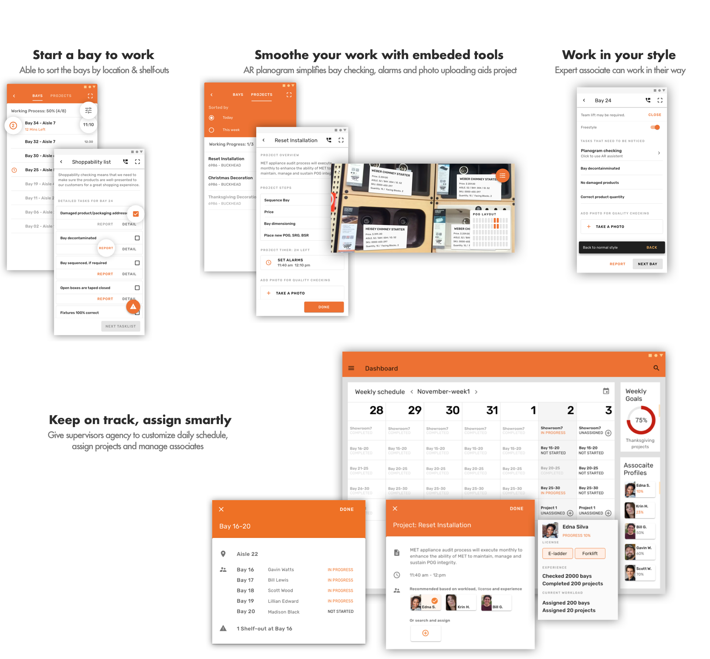

Associate tasking
Partner with The Home Depot to help employees better manage their work

Overview
Team
Xi chen, Yannu Li, Yizhou Liu, Taylor Stillman
Duration
Aug 2018 - Dec 2018
Tools
Pen & Paper, Sketch, Illustrator, Procreate, Principle
My contributions
All teammates contributed to the whole process of this project as UX researchers and designers. Specifically, I co-managed the meeting agenda and working schedule with Xi, facilitated discussions, led whiteboarding and completed final iterations.
Process
Goal
Improve the delegating & tasking experience for Associates & Supervisors
The Home Depot is a home improvement retailer with thousands of indoor retail space across the US. The managers of the Home Depot noticed a problem that the associates in store have too many tasks to go through every day, and managers in store cannot always supervise the outcome of each task, which leads to the concern that the quality of associates’ work remains hard to evaluate. This problem is not only related to associates’ efficiency, but also has a huge influence on the store management and overall customer experience.
How might we aid associates to complete their tasks and help managers to manage tasks for associates? As a team of 4, we worked closely with the Home Depot clients to clarify the problem space, empathize with our users and understand the stakeholders’ goals.
Outcome
As a team of 4, we worked with The Home Depot for 17 weeks to tackle the problem. We did comprehensive user research, collected pain points, and used the information to create a system refining the workflow of both supervisors and associates.

Research
We used the first 12 weeks to understand the challenge. Our research has 3 stages. In the first stage we quickly grasped the problem, target users, current situation by dong secondary research, interviewing stakeholders and visiting the stores. In second stage we took a deep dive into the tasking experience of associates and the delegating experience of supervisors. In the final stage, we engaged stakeholders in our research again to confirm the problems detected, decide the desirable outcome on a business level.
Delving into the context
To quickly jump into the context, we did literature review and competitive analysis to get a general overview of management in retail industry and cooperation tools.To understand the problem specifically in The Home Depot’s context, we initialized the research with 2 stakeholder interviews with 5 people from The Home Depot.
Empathizing with end-users
To fully understand the pain points of current tasking practice, we chose contextual inquiry as our primary method to research the associates, when associates were not available for interviews, we took a step back and observed them instead.
After every round of data collection, we went through and discussed the notes we have as a team so we keep the whole team on the same page and decide the next step.
Zooming out to the store level
After we got all the first-hand data from stores, we conducted an expert interview to confirm business goals, assure agreement on both the information collected and expectations for the outcome. By sharing our insights with stakeholders, we were able to interpret the data in the correct direction.
Synthesize
We did affinity mapping together to synthesize the data we collected from observation and contextual inquiry.


We used JTBD model to break down the major tasks of supervisors and associates into detailed steps and synthesize the emotions of supervisors and associates when they conduct tasks as well as the desired outcome of the tasks.
To describe supervisors’ and associates’ current experience from cognitive perspective and Help understand the contexts and users’ pain points, we summarized current problems and needs with empathy map so that we can keep users needs in mind.
I visualized the business goals to help us prioratize, also I visualized the store layout to contextualize the discussion and facilitate our meeting.
These synthesized data enables us to leverage our research findings. Finally, we prioritized user requirements and correspondent design implications, created key design principles to inform our iterative prototyping and testing.
Design
Brainstorming and idea evaluation
Based on the research findings, we did 2 rounds of 10 minutes madness brainstorming session where we wrote on stickys individually. We generated more than 60 ideas,. which we grouped into similar themes.

{kind=link}
{kind=link}
{kind=link}
{kind=link}
{kind=link}
{kind=link}
{kind=link}
Then with stakeholders’ goals and constraints in mind, we measured them by a 2 by 2 matrix of creativity and feasibility and found those highly possible ideas converged into 3 concepts.
In this concept, associates use camera to scan the bay and get pop-up windows of tasks to be done (like spill and other security issue) and products’ information. Once finished, they upload a photo for quality checking.
A voice assistant would guide associates to do bay-checking step by step. Associates can wake the system, ask questions, report issues and check finished tasks.
This concept clusters tasks into several task lists to be quickly checked, and incorporates freestyle checking for expert associates where they upload photos instead of checking.
As we have less ideas for supervisors’ dashboard, we only created one concept.
The dashboard consists of calendar, goals and associate profiles. Calendar shows all the projects and bays to do in the week, which can be modified by dragging and dropping. Goals shows current progress. Also, supervisors can see an associate’s profile details, bay cluster details, and project details when he clicks the event on the calendar.
Get feedback, merge concepts and finalize wireframe
We met with a product manager from The Home Depot to present our 3 concepts for a 3 hour meeting where we got feedback for all the features in our concepts. We decided to move on with concept 3 while merging AR planogram feature into it. Then we quickly merged the sketches into one final paper concept to present to 1 supervisor and 2 associates at The Home Depot. Incorporating their feedback, we did a whiteboarding session where I finalized the information architecture and final user flow for wireframes.
{kind=link}
{kind=link}
Prototype
We decided to use Material Design to create an intuitive product. We used a customized Material Design theme and followed Material guidelines to create the hi-fi prototype. I was responsible for the supervisor’s dashboard.
{kind=link}
Evaluation
Then we created an interactive prototype in InVision to evaluate and test. Link to the prototype can be found here and here.
We conducted heuristic evaluation with 6 experts: UX designers and UX associates from The Home Depot UX team, and moderated user testing with 3 associates and 1 supervisor.
Lessons learned
Design is all about the mess of real world: from higher levels like what structure to adopt and what information to show, to more detailed level like how big should a button be, everything in the final interface is about the context.